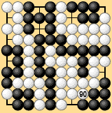
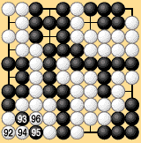
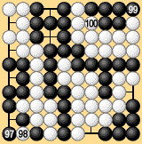
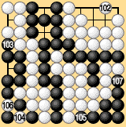
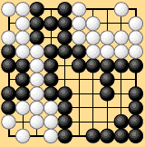
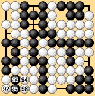

| 6.7 Three Points without Capturing (2) |
|---|
|
Under territory rules I the game is played out in the same way, but when Black passes after White 44 he has to give White a prisoner. Again, the result is a draw. Traditional territory rules, territory rules I and area rules III are all in agreement. The new rules make it possible to explain why this position can usually be regarded as worth three points to White. As the next example shows, however, there are exceptions. In Dia. 6-12-1 the position in question occurs in a seki, and there are ko threats that White cannot remove. Traditional territory rules would still award White three points, so White would win the game by one point. |
|  | |||
|
| Let's see how the game ends under area rules III. White has just played 90 and Black has passed. If White follows the usual strategy of sacrificing an extra stone at 94 in Dia. 6-12-2, a large-scale exchange takes place as shown in Dias. 6-12-3 to 6-12-5 and Black wins by two points. |
|  |  | |||
| Dia. 6-12-2 (92-96) |
|
|||
|---|---|---|---|---|
|  |  | |||
| Dia. 6-12-4 (102-107) | Dia. 6-12-5 |
| Here it is better for White to play 94 in Dia. 6-12-6. After Black 95, White sacrifices a stone above 92, Black captures it, White plays 98, and Black connects. White and Black now both pass, ending the game. Black wins by one point. In this case the position in the bottom left is worth only one point to White. |
|  | |||
|
| Since this position may yield one point or three points depending on surrounding circumstances, it is unnatural to rule that it is always worth three points. The position should be resolved through actual play as in territory rules I or area rules III. |